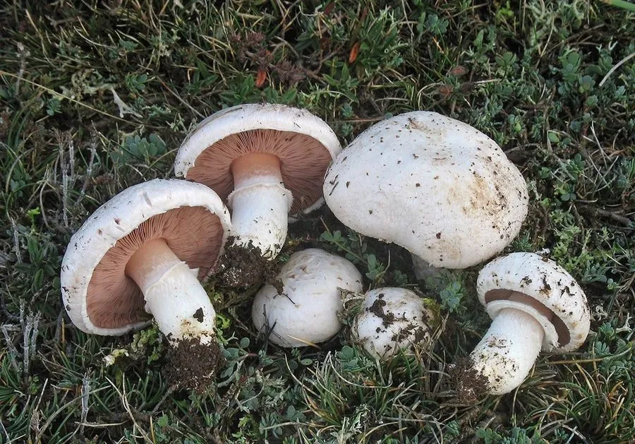

真菌 · 真菌界
草地蘑菇 Agaricus campestris

草地蘑菇是草地和牧场最常见的野生蘑菇，菌盖白色、菌褶由粉红变深褐，味道鲜美，但必须与剧毒的鹅膏菌严格区分。
- 分类
- 门担子菌门纲伞菌纲目伞菌目科蘑菇科属蘑菇属
- 栖息环境
- 草地、牧场、公园草坪与路旁，夏秋季雨后成片出现
- 地理分布
- 世界性分布，中国各地草地与草坪常见
- 保护级别
- 暂无评估（IUCN 未评估，中国未列入重点保护名录）
物种志
草地蘑菇是担子菌门蘑菇科的真菌，子实体单生或群生。菌盖初期半球形，后平展，直径 3–10 cm，表面白色、灰白色至淡褐色，光滑或带细小的鳞片，边缘有时残存白色菌幕；菌肉白色，较薄，受伤后略变粉红。菌褶离生、密集，幼时粉红色，成熟后变为深褐色至黑褐色。菌柄白色，短粗，长 4–8 cm，有白色膜质菌环，菌环常较早脱落。孢子印深褐色。
草地蘑菇生于草地、牧场、公园草坪和路旁，夏秋季雨后成片出现，是世界广布的常见蘑菇。它肉质鲜嫩、味道清香，是很多人认识的第一种野生蘑菇，可炒食和做汤。但采食时必须与剧毒的鹅膏菌区分：鹅膏菌的菌褶是白色的，基部有菌托，菌环多不脱落；草地蘑菇的菌褶成熟后变深褐色，基部无菌托。拿不准时不要采食，这是避免蘑菇中毒最重要的一条原则。
形态与习性
- 菌盖直径 3–10 cm，白色至灰白色
- 菌褶幼时粉红，成熟后深褐色
- 菌柄白色短粗，菌环易脱落
- 菌托无，可与鹅膏菌区分
- 孢子印深褐色
- 食用性可食，必须充分加热
- 易混种剧毒鹅膏菌褶白色、基部有菌托
趣味知识
- 草地蘑菇的菌褶会从粉红变成深褐色，而鹅膏菌的菌褶始终是白色。
- 它的基部没有菌托，这是与致命鹅膏最重要的区别。
- 草地蘑菇雨后常成片冒出，是草地上的“常客”。
- 不认识的蘑菇坚决不采，这条原则能救命。